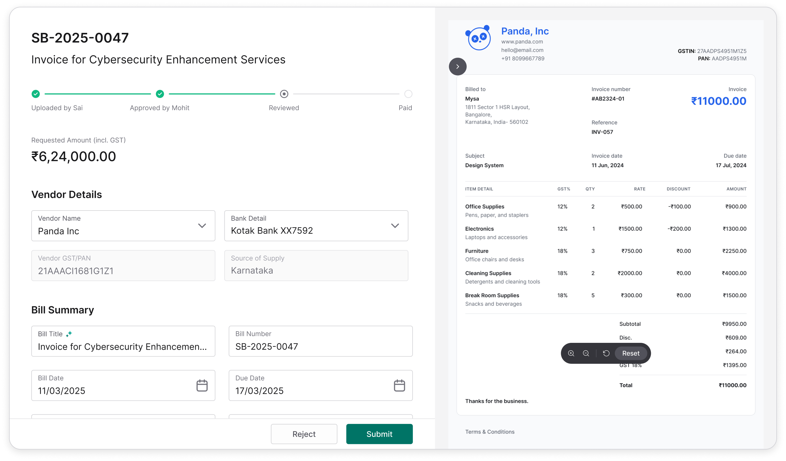
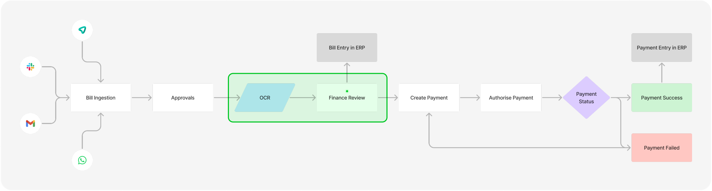
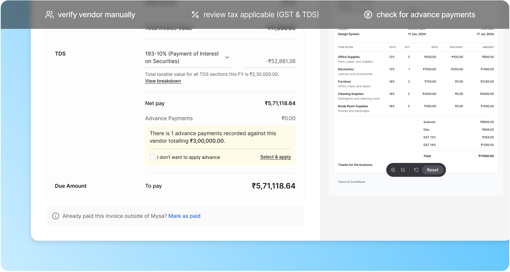
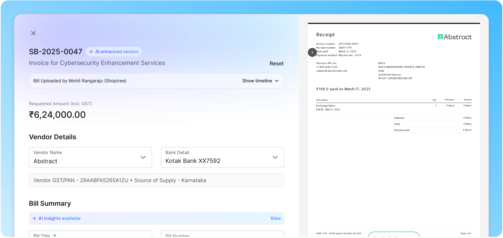
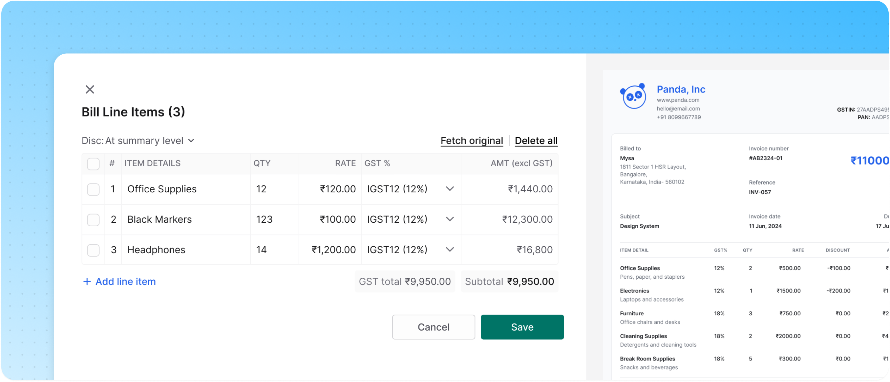
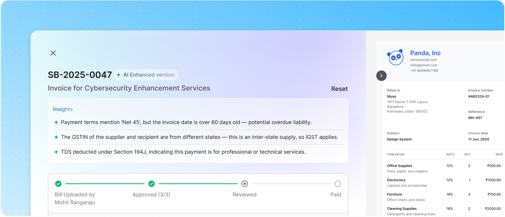
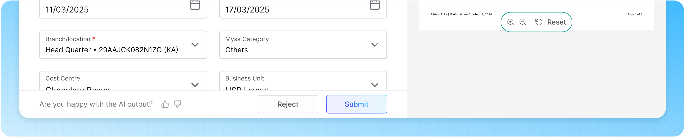
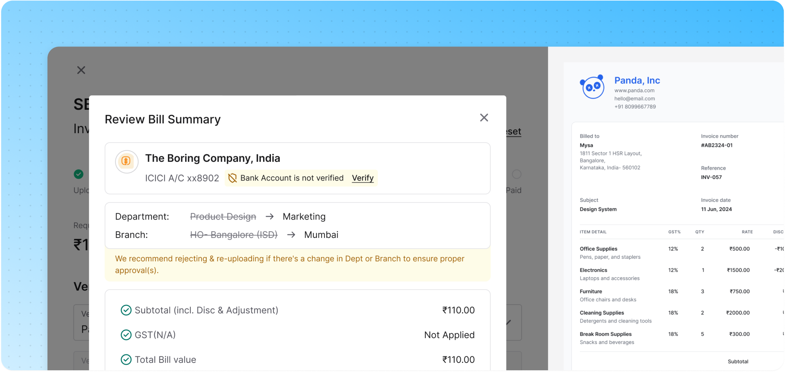

Bills that arrive pre-thought.
Finance teams spent nearly 9 minutes processing every bill. Not because the work was complex.
The system simply kept asking people to verify things it already knew.
Match the vendor. Confirm GST and TDS. Check whether an advance had already been paid. Verify line items.
Flag recurring expenses. Most of these answers already existed somewhere in the system. Yet every bill started from scratch.

Trusted by teams at
Swish runs 48 kitchens across 32 locations. Every one of them generates bills.
Swish is a fast-moving food tech company. The kind that prides itself on delivering in 10 minutes.
Behind that speed, over 100 vendor bills land every month from suppliers, service providers, and delivery partners, across formats, channels, and locations. All of it needs to be validated, approved, and paid on time.
Before Mysa, the entire process was manual. Every vendor looked up by hand. Every GST code cross-checked individually. Every bill treated like the first one.

After approvals, every bill reaches the accountant for finance review. Nothing moves until this step is done. No payment goes out. No books close. And at Swish's scale, with 48 kitchens running simultaneously, the queue never empties.

We didn't need to change the form. We needed to change what arrived in it.
The review screen wasn't the problem. It was doing exactly what it was designed to do – present a bill for review.
The problem was what it was presenting: raw, unverified, unmatched data that put all the decision-making on the accountant. The fix wasn't a better layout or a smarter field arrangement. It was upstream. Every bill passes through an OCR layer before it ever reaches the review screen. That was where the work needed to happen.
Before the accountant even opened the bill. If we could make that layer smarter, the accountant wouldn't be filling a form. They'd be confirming one.
Adding context layer Where bills get understood
Every bill goes through OCR (optical character recognition) before it reaches the accountant.
This is the step that converts a bill image into readable data. It scans the document, extracts what it can read, and passes it forward. Vendor name, invoice number, amount, GST, line items. All of it gets lifted off the page and dropped into the review screen.
The problem with traditional OCR is that it reads without understanding. It sees “28%” and picks it – not because 28% is correct, but because that's the number it found. It sees a string of digits near the bottom of the page and calls it the bank account even if it's the IFSC code. It has no awareness of vendor history, no memory of past corrections, no sense of what a recurring bill from the same supplier should look like. It was doing its job. It just wasn't doing enough of it.
The opportunity was clear: if we could replace character recognition with actual comprehension – a layer that understood the bill, not just read it.
We replaced character recognition with comprehension.
The new pipeline runs in two stages simultaneously. The moment a bill is uploaded, Textract (OCR) extracts the raw data and passes it to the review screen instantly, the accountant doesn't wait. In parallel, LLM picks up the same document, runs it through a set of trained prompts and validation rules, and produces a smarter version.
Not smarter because it reads better. Smarter because it understands what it's reading.
It knows that “IceMach Services” on the invoice is “IceMach Pvt. Ltd.” in the ERP. It knows that this vendor type attracts 18% GST, not 28%. It knows this bill came in last month too, with a slightly different amount. It knows there's an advance sitting against this vendor that hasn't been adjusted yet. It surfaces all of that before the accountant opens the screen.
Vendor Match: The AI doesn't guess. It confirms.
Vendor names on bills rarely match the ERP exactly – abbreviations, informal names, regional spellings. The AI scans for variations, cross-references against the GSTIN and PAN on the bill, and validates the match against your ERP before pre-filling anything. If it's not 100% certain, it doesn't fill. In finance, a wrong vendor on a payment isn't a UX issue – it's a credibility mistake.

GST Suggestion: The right rate, not just a rate.
GST applicability isn't a single lookup – it depends on two things: the date of supply and the source of supply. Get either wrong and the filing is incorrect. The AI evaluates both against the matched vendor and surfaces the applicable options, ranked by what's historically selected for that vendor. The accountant sees a recommendation, not a blank field with 40 choices.

Bill Insights: What the accountant would have had to remember.
After processing, the AI surfaces up to three observations in plain language. An unadjusted advance sitting against the vendor. An amount that's 12% higher than last month. A recurring bill pattern worth putting on a schedule. The things that would otherwise require a second tab, a memory, or a conversation with someone else in the team.

Feedback Loop: The model learns your business.
Every AI output carries a quiet question: was this right? Thumbs up or down. When the accountant engages, the model learns their vendor patterns, their preferred GST selections, their bill formats – and gets sharper over time for that specific company.

Three Weeks Thirty accountants
Before full rollout, we ran a closed beta across six finance teams – Swish, Kouzina, Pizza Bakery, DPDZero, Atomic Works, and a few others. Roughly 30 accountants, three weeks, real bills processed in production.
Guru and Jana, our accounting partners, were central to this. The two things we were watching closely: whether the AI checks were accurate – validating the ground truth rules we'd trained the system on and whether time per bill was actually dropping.
Both moved in the right direction. The ground truth validations caught edge cases we hadn't accounted for, we fixed them, tightened the prompts, and reran. The time metric improved week on week. But the thing that stood out had nothing to do with accuracy.
Accountants were flying through bills – faster than we expected. Too fast. GST not applied. An advance sitting unaccounted. TDS missed. The AI had surfaced all of it. The flags were right there. But habit had taken over reviewing had turned into clicking.
Classic monkey clicking behaviour.

The accountant stopped filling. They started deciding.
Time per bill dropped from around 9 minutes to under 2. Vendor mismatches fell sharply in the first month. The submission confirmation caught issues that would have otherwise gone through unnoticed. And across the cohort – 60 finance team members, six clients, three weeks – the feedback was consistent: the work felt lighter, not because there was less of it, but because the system had stopped asking people to do things it could do itself.
0% of Swish's payments now run through Mysa.
“I had a lot of manual entries. But in Mysa, it's mostly automated. I don't have to enter anything.”
“The difference was immediate. Bills that used to take the whole morning were done before the first chai break.”